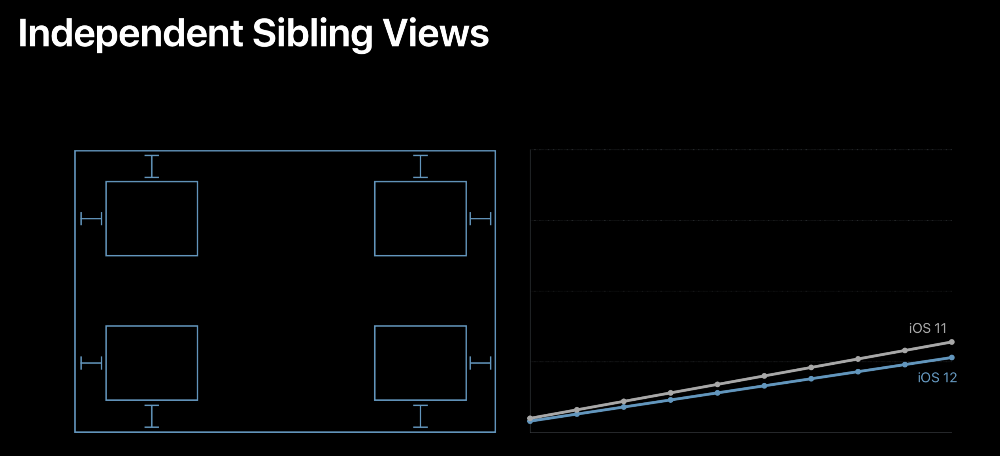

Auto Layout ，是苹果公司提供的一个基于约束布局，动态计算视图大小和位置的库，并且已经集成到了 Xcode 开发环境里。
在引入 Auto Layout 这种自动布局方式之前，iOS 开发都是采用手动布局的方式。而手动布局的方式，原始落后、界面开发维护效率低，对从事过前端开发的人来说更是难以适应。所以，苹果需要提供更好的界面引擎来提升开发者的体验，Auto Layout 随之出现。
Auto Layout 的来历
- 1997 年，Auto Layout 用到的布局算法 Cassowary 被发明了出来
- 2011 年，苹果公司将 Cassowary 算法运用到了自家的布局引擎 Auto Layout 中
Cassowary 能够有效解析线性等式系统和线性不等式系统，用来表示用户界面中那些相等关系和不等关系。基于此，Cassowary 开发了一种规则系统，通过约束来描述视图间的关系。约束就是规则，这个规则能够表示出一个视图相对于另一个视图的位置。
由于 Cassowary 算法让视图位置可以按照一种简单的布局思路来写，这些简单的相对位置描述可以在运行时动态地计算出视图具体的位置。视图位置的写法简化了，界面相关代码也就更易于维护。苹果公司也是看重了这一点，将其引入到了自己的系统中。
Auto Layout 的生命周期
Auto Layout 不只有布局算法 Cassowary，还包含了布局在运行时的生命周期等一整套布局引擎系统，用来统一管理布局的创建、更新和销毁。了解 Auto Layout 的生命周期，是理解它的性能相关话题的基础。这样，在遇到问题，特别是性能问题时，我们才能从根儿上找到原因，从而避免或改进类似的问题。
这一整套布局引擎系统叫作 Layout Engine ，是 Auto Layout 的核心，主导着整个界面布局。
每个视图在得到自己的布局之前，Layout Engine 会将视图、约束、优先级、固定大小通过计算转换成最终的大小和位置。在 Layout Engine 里，每当约束发生变化（添加、删除视图时会触发约束变化，Activating 或 Deactivating，设置 Constant 或 Priority 时也会触发约束变化），就会触发 Deffered Layout Pass，完成后进入监听约束变化的状态。Layout Engine 在碰到约束变化后会重新计算布局，获取到布局后调用 superview.setNeedLayout()，然后进入 Deferred Layout Pass。
Deferred Layout Pass 的主要作用是做容错处理。如果有些视图在更新约束时没有确定或缺失布局声明的话，会先在这里做容错处理。
接下来，Layout Engine 会从上到下调用 layoutSubviews() ，通过 Cassowary 算法计算各个子视图的位置，算出来后将子视图的 frame 从 Layout Engine 里拷贝出来。
在这之后的处理，就和手写布局的绘制、渲染过程一样了。所以，使用 Auto Layout 和手写布局的区别，就是多了布局上的这个计算过程。
Auto Layout 性能问题
Auto Layout 的性能是否有问题，我们先看看苹果公司自己是怎么说的吧。

上图是 WWDC 2018 中 202 Session 里讲到的 Auto Layout 在 iOS 12 中优化后的表现。可以看到，优化后的性能，已经基本和手写布局一样可以达到性能随着视图嵌套的数量呈线性增长了。而在此之前的 Auto Layout，视图嵌套的数量对性能的影响是呈指数级增长的。
在 1997 年时，Cassowary 是以高效的界面线性方程求解算法被提出来的。它解决的是界面的线性规划问题，而线性规划问题的解法是 Simplex 算法。单从 Simplex 算法的复杂度来看，多数情况下是没有指数时间复杂度的。而 Cassowary 算法又是在 Simplex 算法基础上对界面关系方程进行了高效的添加、修改更新操作，不会带来时间复杂度呈指数级增长的问题。
那么，如果 Cassowary 算法本身没有问题的话，问题就只可能是苹果公司在 iOS 12 之前在某些情况下没有用好这个算法。
接下来，我们再看一下 WWDC 2018 中 202 Session 的 Auto Layout 在兄弟视图独立开布局的情况。

可以看到，兄弟视图之间没有关系时，是不会出现性能呈指数增加问题的。这就表示 Cassowary 算法在添加时是高效的。但如果兄弟视图间有关系的话，在视图遍历时会不断处理和兄弟视图间的关系，这时会有修改更新计算。
由此可以看出，Auto Layout 并没有用上 Cassowary 高效修改更新的特性。
实际情况是，iOS 12 之前，很多约束变化时都会重新创建一个计算引擎 NSISEnginer 将约束关系重新加进来，然后重新计算。结果就是，涉及到的约束关系变多时，新的计算引擎需要重新计算，最终导致计算量呈指数级增加。
总体来说， iOS12 的 Auto Layout 更多地利用了 Cassowary 算法的界面更新策略，使其真正完成了高效的界面线性策略计算。
Auto Layout 的易用性
很多开发者直到现在还不愿意使用 Auto Layout 的另一个原因，就是它还存在原生写法不易用的问题。
苹果公司其实也考虑到了这点。所以，苹果公司后来又提供了 VFL (Visual Format Language) 这种 DSL（Domain Specific Language，中文可翻译为“领域特定语言”） 语言来简化 Auto Layout 的写法。
本质上，Auto Layout 只是一种最基础的布局思路。在前端出现了 Flexbox 这种高级的响应式布局思路后，苹果公司也紧跟其后，基于 Auto Layout 又封装了一个类似 Flexbox 的 UIStackView，用来提高 iOS 开发响应式布局的易用性。